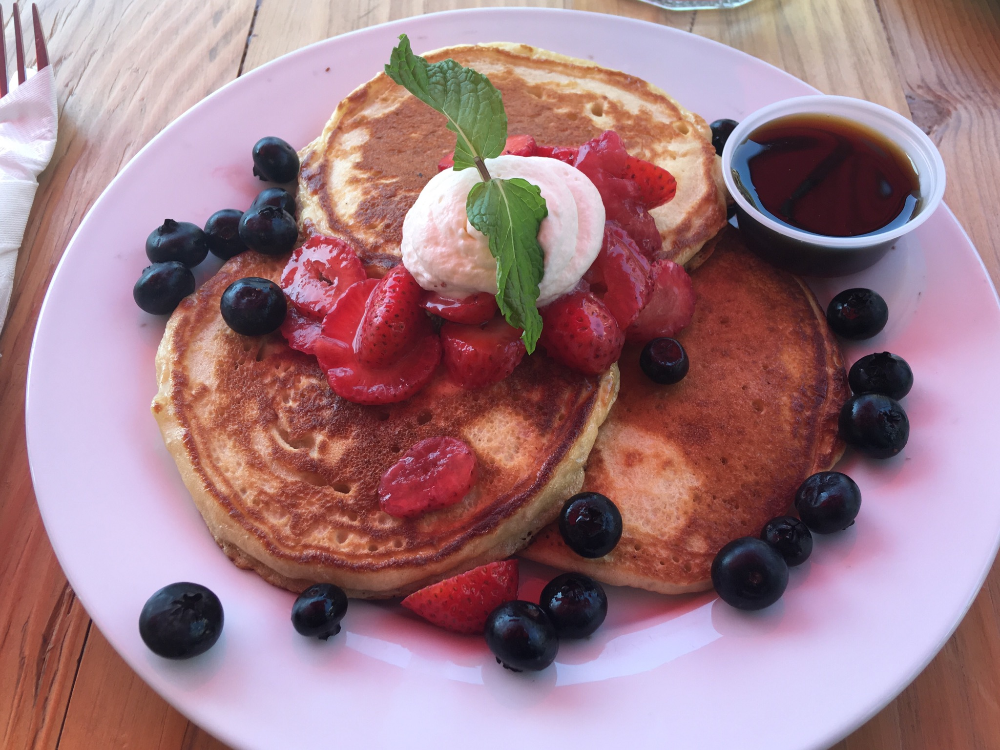

Pancake Recipe
Best Breakfast Meal
Ingredients:
- 1 cup all-purpose flour
- 2 tablespoons granulated sugar
- 1 tablespoon baking powder
- 1/2 teaspoon salt
- 1 cup milk
- 2 tablespoons unsalted butter, melted
- 1 large egg
- 1 teaspoon vanilla extract
Instructions:
- In a large mixing bowl, whisk together the flour, sugar, baking powder, and salt.
- In a separate bowl, whisk together the milk, melted butter, egg, and vanilla extract.
- Pour the wet ingredients into the dry ingredients and stir until just combined. Be careful not to overmix; it's okay if the batter is slightly lumpy.
- Heat a lightly greased griddle or frying pan over medium-high heat.
- For each pancake, pour about 1/4 cup of batter onto the griddle.
- Cook until bubbles form on the surface of the pancake and the edges begin to look set, about 2-3 minutes.
- Flip the pancake and cook for an additional 1-2 minutes, or until golden brown on both sides.
- Repeat with the remaining batter, greasing the griddle as needed.
- Serve the pancakes warm with your favorite toppings, such as maple syrup, fresh fruit, or whipped cream.
